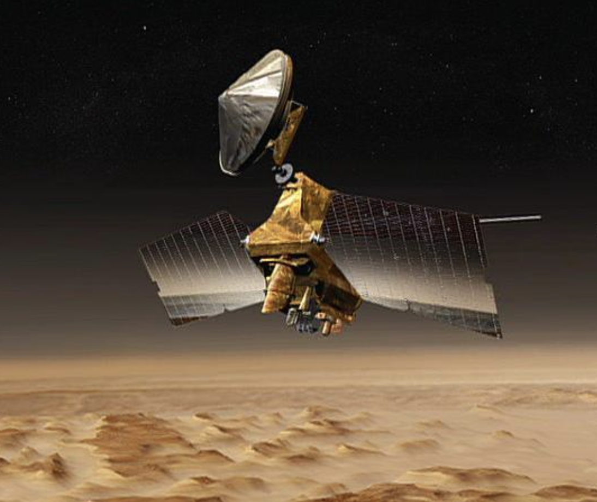

Reconnaissance Orbiter
NASA's Mars Reconnaissance Orbiter, launched in August, 2005, carries the most powerful camera ever flown on a planetary exploration mission for homing in on details of Martian terrain with extraordinary clarity.
Perseverance Rover
The Mars 2020 Perseverance Rover mission is part of NASA's Mars Exploration Program, a long-term effort of robotic exploration of the Red Planet. The mission addresses high-priority science goals for Mars exploration, including key questions about the potential for life on Mars.
Mars Odyssey
The 2001 Mars Odyssey mission is NASA's longest-lasting spacecraft at Mars. The spacecraft launched on April 7, 2001, and arrived at Mars on October 24, 2001, 0230 Universal Time (October 23, 7:30 pm PDT/10:30 EDT). Its mission includes making the first global map of the amount and distribution of many chemical elements and minerals that make up the Martian surface.
Global Surveyor
Launched November 7, 1996, Mars Global Surveyor became the first successful mission to the red planet in two decades. After a year and a half spent trimming its orbit from a looping ellipse to a circular track around the planet, the spacecraft began its prime mapping mission in March 1999. It has continued to observe the planet from a low-altitude, nearly polar orbit ever since.
MARS MISSIONS
IN ACTION.
MAVEN
MAVEN (Mars Atmospheric and Volatile EvolutioN) is the second mission selected for NASA's Mars Scout program, an initiative for smaller, low-cost, competed missions led by a principal investigator. Responsive to high-priority science goals listed in the National Academy of Science's 2003 decadal survey on planetary exploration, MAVEN is obtaining critical measurements of the Martian atmosphere to help understand dramatic climate change on the red planet over its history.
The ExoMars Trace
Gas Orbiter
The ExoMars Trace Gas Orbiter, or TGO, was launched to Mars in March 2016. It was originally intended as a collaboration between the European Space Agency (ESA) and NASA, but after NASA dropped out of the project in 2012, the Russian space agency Roscosmos stepped in to provide a Proton-M rocket to launch the spacecraft and help develop some of its scientific instruments. TGO carried the Schiaparelli lander with it to Mars, but after the spacecraft’s seven-month journey, the dropoff did not go as planned. Instead of landing gently on the planet’s surface, Schiaparelli’s parachutes deployed too early and it crashed to the ground. All was not lost for the mission, though — the orbiter reached its final altitude of 400 kilometers (248.5 miles) above the surface in 2018 and has continued to observe Mars since then.
Curiosity

Part of NASA's Mars Science Laboratory mission, Curiosity is the largest and most capable rover ever sent to Mars. It launched November 26, 2011 and landed on Mars at 10:32 p.m. PDT on Aug. 5, 2012 (1:32 a.m. EDT on Aug. 6, 2012). Mars Science Laboratory arrived at Mars through technological innovations that tested a completely new landing method. The spacecraft descended on a parachute, then during the final seconds before landing, the landing system fired rockets to allow it to hover while a tether lowered Curiosity to the surface.
Ongoing Mars Exploration
As of December 2022, there are three operational rovers on the surface of Mars, the Curiosity and Perseverance rovers, both operated by the American space agency NASA, as well as the Zhurong rover, part of the Tianwen-1 mission by the China National Space Administration (CNSA).[4][5] There are seven orbiters surveying the planet: Mars Odyssey, Mars Express, Mars Reconnaissance Orbiter, MAVEN, the Trace Gas Orbiter, the Hope Mars Mission, and the Tianwen-1 orbiter, which have contributed massive amounts of information about Mars.